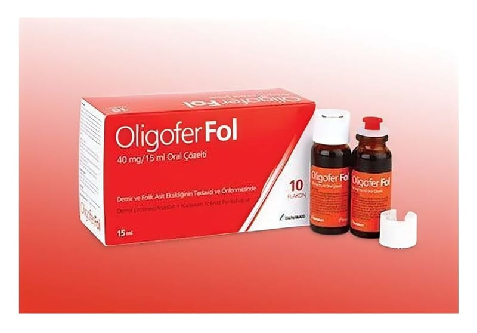

Oligofer Fol 40 mg/15 ml Oral Çözelti

Ne için kullanılır
KT · Bölüm 1OLİGOFER FOL, kutuda 10 adet 15 ml’lik flakon olarak sunulan bir çözeltidir.
OLİGOFER FOL, etkin madde olarak üç değerlikli demir’e eşdeğer demir proteinsüksinilat ve rezervuarlı kapak içerisinde bastırmakla çözelti içerisine giren kalsiyum folinat pentahidrat içerir. • Demir protein süksinilat bir demir formudur. İnsanlarda demir kırmızı kan hücrelerinde bulunan hemoglobin adlı proteinin üretimi ve görevi için çok önemlidir • Folinik asit yeni hücrelerin üretilmesi ve korunması için gerekli bir vitamindir. Bu durum özellikle hücre bölünmesinin hızlı olduğu gebelik ve anne karnındaki bebek için önemlidir. Bu ilacı kullanmaya başlamadan önce bu KULLANMA TALİMATINI dikkatlice okuyunuz, çünkü sizin için önemli bilgiler içermektedir. • Bu kullanma talimatını saklayınız. Daha sonra tekrar okumaya ihtiyaç duyabilirsiniz. • Eğer ilave sorularınız olursa, lütfen doktorunuza veya eczacınıza danışınız. • Bu ilaç kişisel olarak sizin için reçete edilmiştir, başkalarına vermeyiniz. • Bu ilacın kullanımı sırasında, doktora veya hastaneye gittiğinizde doktorunuza bu ilacı kullandığınızı söyleyiniz. • Bu talimatta yazılanlara aynen uyunuz. İlaç hakkında size önerilen dozun dışında yüksek veya düşük doz kullanmayınız
OLİGOFER FOL vücutta demir (demir eksikliği anemisi) veya folat’ın (megaloblastik anemi) az bulunması sonucu ortaya çıkan kansızlığın önlenmesi veya tedavi edilmesinde kullanılır. Bu durum çocuklarda veya gebelikte, doğum sonrasında veya emzirme sırasında ortaya çıkabilecek kansızlıkların tedavisini de içerir.
2.OLİGOFER FOL'ü kullanmadan önce dikkat edilmesi gerekenler
OLİGOFER FOL’ü aşağıdaki durumlarda KULLANMAYINIZ
Eğer; - Demir yüklenmesi durumunuz (hemokromatozis, kronik hemolizis) varsa - Demire veya içerdiği maddelerden herhangi birine karşı aşırı duyarlılılığınız varsa - Demir kullanım bozukluğunuz (aplastik anemi, kurşun anemisi, sidero-akrestik anemi) veya talasemi hastalığınız varsa - Demir eksikliğine bağlı olmayan aneminiz varsa - Ciddi karaciğer, pankreas ve böbrek hastalığınız varsa kullanmayınız.
Folat yetersizliğine bağlı olmayan ancak başka bir vitamin olan B12 vitamini yetmezliğine bağlı megaloblastik aneminiz varsa, bu durumda B12 vitamini OLİGOFER FOL ile birlikte kullanılmalıdır.
OLİGOFER FOL’ü aşağıdaki durumlarda DİKKATLİ KULLANINIZ
- Düzenli alkol kullanıyorsanız - Hepatit (sarılık), mide ülseri ve iltihaplı barsak hastalığı tanınız varsa - Dışkıda gizli kan aranması sırasında yanılgıya neden olabilir. Bu nedenle bu inceleme sırasında tedavi kesilmelidir. - Oral demir preparatlarının kullanımı sırasında dışkının rengi koyulaşabilir, bu durum normal olup herhangi bir önlem gerektirmez. - Süte dayanıksızlığınız varsa OLİGOFER FOL sizde ciddi alerjik reaksiyona neden olabilir. - Çocuklarda demir içeren ürünlerin yanlışlıkla alınması ölümcül zehirlenmeye yol açabilir. Çocukların erişemeyeceği yerlerde saklayınız.
OLİGOFER FOL’ün yiyecek ve içecek ile kullanılması: Sebzeler,süt, kahve ve çayda bulunan bazı maddeler demir emilimini azaltabilirler. Bu nedenle OLİGOFER FOL bu gibi gıdaların alımından iki saat önce veya sonra alınmalıdır.
Hamilelik İlacı kullanmadan önce doktorunuza veya eczacınıza danışınız.
OLİGOFER FOL hamilelikte demir ve folat takviyesi olarak kullanılır.
Tedaviniz sırasında hamile olduğunuzu fark ederseniz hemen doktorunuza veya eczacınıza danışınız.
Emzirme
İlacı kullanmadan önce doktorunuza veya eczacınıza danışınız.
OLİGOFER FOL emzirme döneminde demir ve folat desteği olarak kullanılır.
Araç ve makine kullanımı Araç ve makine kullanım becerisi üzerine etkisi bildirilmemiştir.
OLİGOFER FOL’ün içeriğinde bulunan bazı yardımcı maddeler hakkında önemli bilgiler
İçeriğinde bulunan sorbitol (E420) nedeniyle, eğer daha önceden doktorunuz tarafından bazı şekerlere karşı intoleransınız olduğu söylenmişse bu tıbbi ürünü almadan önce doktorunuzla temasa geçiniz.
Bu tıbbi ürün her flakonda 15 mg sodyum ihtiva eder. Bu durum, kontrollü sodyum diyetinde olan hastalar için gözönünde bulundurulmalıdır.
OLİGOFER FOL metil paraben sodyum ve propil paraben sodyum içerdiğinden alerjik reaksiyonlara (muhtemelen gecikmiş) sebebiyet verebilir.
OLİGOFER FOL propilen glikol ve mannitol içermektedir ancak dozu nedeniyle herhangi bir uyarı gerekmemektedir.
Diğer ilaçlar ile birlikte kullanımı
OLİGOFER FOL, tetrasiklinler, bisfosfonatlar, kinolonlar, penisilamin, tiroksin, levadopa, karbodopa, alfa-metildopa gibi ajanların emilimini ve biyoyararlanımını azaltabilir. Bu ilaçlar OLİGOFER FOL uygulamasından en az 2 saat önce veya sonra uygulanmalıdır.
Demir emilimi, 200 mg’ın üzerinde askorbik asitin eş zamanlı uygulaması ile artabilmekte veya antiasid kullanımı ile azalabilmektedir. Kloramfenikol demir tedavisine cevabı geciktirebilir.
Bazı kanser ilaçları (aminopterin, metotreksat ve diğer pterinik türevleri) folik asidin etkinliğini azaltabilir. Bu yüzden OLİGOFER FOL bu ilaçlarla tedavi gören hastalarda kullanılmamalıdır.
Eğer reçeteli ya da reçetesiz herhangi bir ilacı şu anda kullanıyorsanız veya son zamanlarda kullandınız ise lütfen doktorunuza veya eczacınıza bunlar hakkında bilgi veriniz.